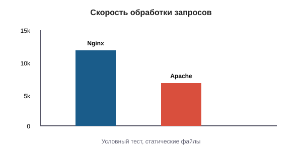

Сравнение Nginx и Apache
Оба сервера решают одну задачу — обслуживают HTTP-запросы. Но делают это по-разному, поэтому подходят для разных случаев.

Таблица различий
| Что сравниваем | Nginx | Apache |
|---|---|---|
| Модель работы | Событийная | Процессы и потоки |
| Память | Мало | Больше |
| Статика | Очень быстро | Хорошо |
| Динамика | Через FastCGI/proxy | Модули (mod_php) |
| Конфиг | Один файл | Файл + .htaccess |
| Сложность | Средняя | Простая |
Когда выбирают Nginx
- много одновременных посетителей;
- много статики и медиафайлов;
- нужен обратный прокси;
- микросервисы с несколькими бэкендами.
Когда выбирают Apache
- нужны
.htaccess; - используются особые модули;
- старый сайт на
mod_php; - важна простота настройки.
Оба вместе
Часто ставят Nginx «на входе», а Apache — позади. Nginx отдаёт статику, а динамику передаёт Apache.
# Nginx как фронтенд
server {
listen 80;
server_name example.com;
location /static/ {
root /var/www/example;
}
location / {
proxy_pass http://127.0.0.1:8080; # тут Apache
proxy_set_header Host $host;
}
}
Такая связка даёт скорость Nginx на статике и гибкость
Apache на динамике.